FreeLCS User Manual
FreeLCS stands for Free Loudness Correction Server.
FreeLCS lets you automatically correct audio files to EBU R128 target
loudness level.
The software lets you easily set up a server that shares one of it's folders
to the network. Users of your network can then drop audio files to the
server for automatic loudness correction. For each processed file the server
also creates a loudness history graphics file which shows loudness
variations inside the file.
FreeLCS uses other open source programs to get the job done (Linux,
libebur128, gnuplot, FFmpeg, sox, mediainfo). All software is free and Open
Source.
- Automatically loudness corrects audio files to conform with EBU R128
loudness recommendation.
- Very easy to use, just drop in your file and copy back the loudness
corrected version.
- Creates loudness history graphics that allows the user to see how
loudness varies inside a file (example picture below).
- Supports channel counts from mono to 5.1.
- Supports EBU TruePeak measurement.
- Uses a protective TruePeak lookahead limiter to keep peaks in the
allowed range where needed.
- Takes advantage of multiple processor cores to run calculations
simultaneously.
- User is able to define how many audio files are processed at the same
time, limited only by available cpu processing power and hard disk
bandwidth.
- Supports writing loudness measurement results to a machine readable
file.
- Modest hardware requirements, runs fine with only 6 GB of ram.
- Fast processing. On typical hardware you can expect processing to be
10 - 20 faster than realtime.
- Cleans up automatically by deleting all files after a set time delay.
- Sends possible error messages to the admin by email.
- All formats recognized by FFmpeg can be processed.
- Support for multistream files, all audio streams are extracted and
processed individually.
- Extract audio from wrappers containing both video and audio.
- Remix audio from MXF files to required mixes before loudness
processing.
- All software is free and Open Source. Install on as many computers as
you like.
- Runs on the free Linux operating system, no need to pay for
proprietary os installation.
- As of version 4.0 FreeLCS runs inside the Docker environment.
- Easy to integrate in many workflows.
- Written in Python 3.
- More specific information can be found in the FAQ.
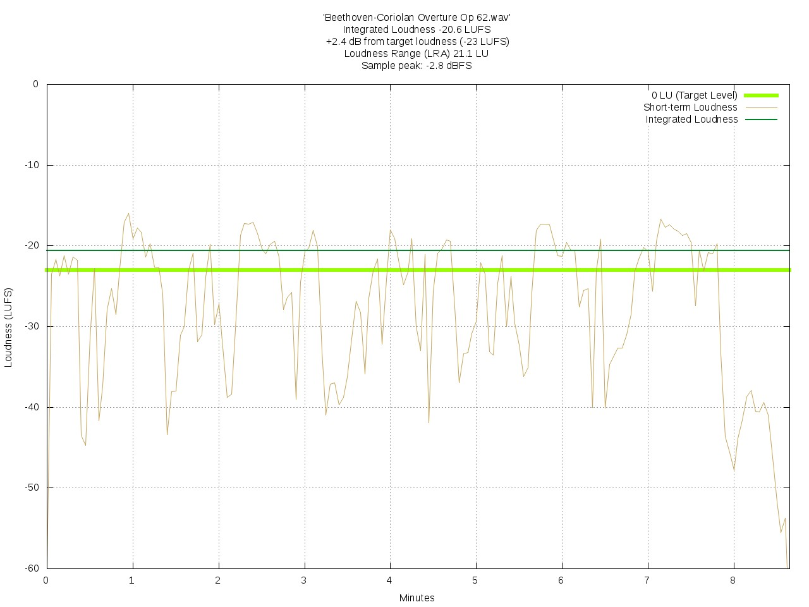
- Docker environment
- A computer with at least 2 processor cores.
- 6 GB of RAM.
- An internet connection is needed for the setup
- Ubuntu Server LTS is recommended as the Docker host computer os although it probably is possible to use any Linux for this. FreeLCS is only tested with Ubuntu Server LTS.
- The FAQ discusses things like
supported formats, channel orders, etc.
You can learn about Docker for example here by reading through the free course material:
https://courses.mooc.fi/org/uh-cs/courses/devops-with-docker
However you don't need to do that before setting up FreeLCS 4.x as every step is explained in detail below. Later however you might want to learn more about Docker's features.
Things you need to do on a desktop computer:
-
Unzip FreeLCS-4.xx release - archive.
-
Create FreeLCS configuration files using a web browser
Things you need to do on your Docker host - computer:
-
Unzip FreeLCS-4.xx release - archive
-
Go to the FreeLCS-4.xx zip directory
-
Create a working directory for FreeLCS: mkdir mountpoint and make it writable for all users: chmod -R 777 mountpoint
-
Copy configuration files from your desktop computer to the Docker host - computer
-
Install docker environment
-
Build and start FreeLCS containers. This is as easy as running one command: docker compose up -d
-
Setup automatic security updates and FreeLCS image backups
Depending on the options you set while creating the configuration this creates up three docker - images / containers.
-
One runs LoudnessCorrection and Samba - server
-
(Optional) One runs Heartbeat - checker that monitors the health of LoudnessCorrection
-
(Optional) One runs Progress - report that lets you see with you web browser which files are waiting to be processed and which a being processed at the moment
First unzip the FreeLCS 4.xx onto a computer were you can fire up a web browser. Then open the file config_editor.html in your web browser and setup FreeLCS configuration. Ctrl + o usually opens a file browser that lets you navigate your disk and open files into your browser.
FreeLCS default configuration sets up LoudnessCorrection at -23 LUFS, Samba - server and Progress - Report. If this is all you need then you can just scroll down the config_editor page and save four different configuration files needed by FreeLCS.
On the top of the configuration editor you can define the following values:
- Number of Processor cores to use: defines how many files can be processed simultaneously. Each file ties up two processr cores so if you have 8 cores you can process four files simultaneously. You can also set this value to: All and then FreeLCS uses all available cores on the host computer.
- File expiry time in minutes: How long the files are allowed to stay on disk before they are automatically deleted
- Target loudness level: Use -23 LUFS for broadcast, some higher value like -16 LUFS for social media
- Language for hotfolder path and result graphics: For the Finnish speaking users select: Finnish for other select: English
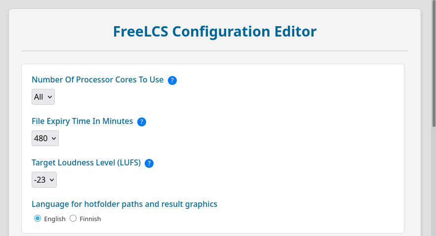
- Send error messages by email: If you want to receive FreeLCS error messages by email, set up your smtp - server and email recipent details here
- Server name / Identity: If you have more than one installation of FreeLCS then it is important to give the server a unique name here. When the server sends you error messages this name will appear in it so that you know which server is in question.
- Start heartbeat checker: Heartbeat checker monitors the LoudnessCorrection - program and sends email if it crashes
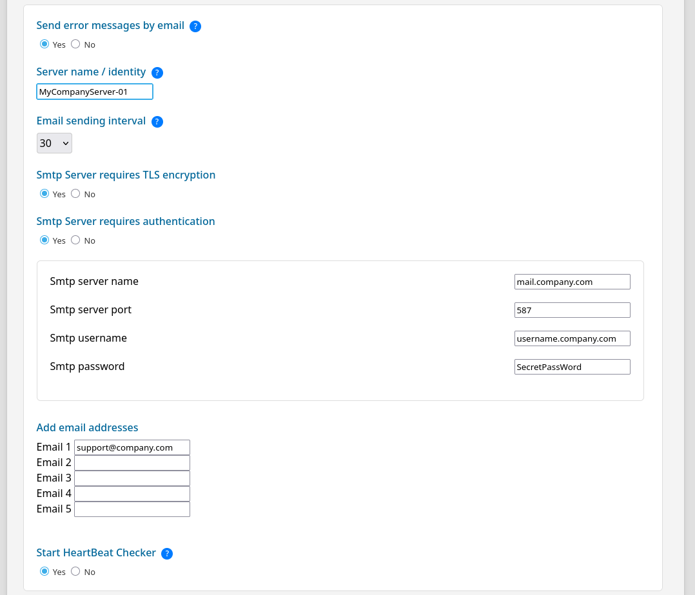
- Write html progress report: If you enable this option then you can connect to YourHostMachineIP:9000 with an web browser and see details of file processing
- Peak measurement method: Truepeak oversamples the audio by 4x and reveals peaks hidden between samples. If in doubt set this to Truepeak
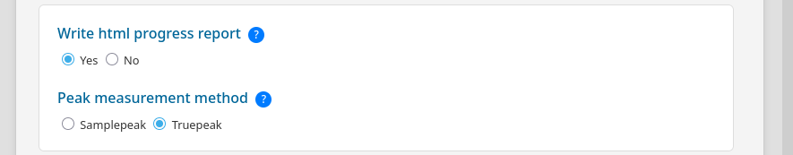
- Use FreeLCS file output defaults: Disabling this option lets you define what output files FreeLCS creates. You may want to change the default behaviour if FreeLCS is a part of a audio processing chain. Read more about it here
- Create loudness corrected audio files: This will enable / disable creation of loudness corrected audio files
- Create loudness history graphics: This will enable / disable creation of graphic files showing audio loudness changes across time
- Delete original multistream audiofile: If an input file has several audio streams in it all streams will be extracted to separate files. Set this option to: Yes if the multichannes file can be deleted after audio stream extraction
- Write loudness calculation results to a machine readable file: If FreeLCS is a part of a processing chain then enable this setting to write loudness measurement details to a file where the next step can pick them up. Also define what characters are used to separate measurement details for a single file (Unit separator) and measurement details of different files (Record separator)
- Unit separator: These unprintable ASCII characters are used between measurement details of a single file Read more about it here
- Record separator: These unprintable ASCII characters are used where the measurement details for one files ends and another begins Read more about it here
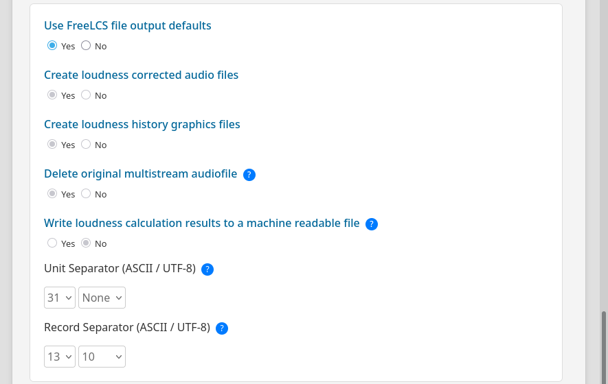
- Enable MXF audio remixing: This allows you to define how you would like audio inside a MXF wrapped file to be recombined to new mixes before loudness processing. Read more about it here. Most users will leave "Enable MXF Audio Remixing" to "No".
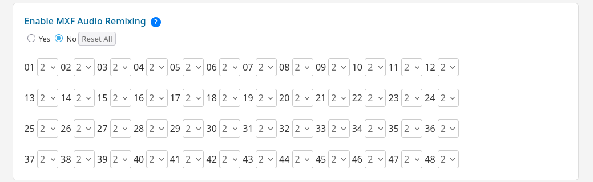
- FFmpeg allowed wrapper and codec formats: This allows the user to restrict processing only to patent free formats. Format patentability varies from country to country, see more about it in FAQ. As of 2018 the patents for formats: Dolby AC-3, Mpeg 1 Layers 1, 2 and 3 (mp1, mp2, mp3) have expired. These formats are now patent free and can be used without paying license fees. More of this and links to the current patent situation of these format in FAQ here. These formats are now enabled if you enable free formats in this window.
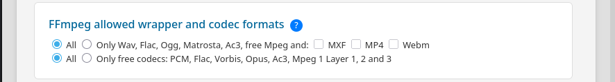
- Save FreeLCS configurations files: FreeLCS needs four configuration files and here you save them your local computer. Copy these files over to your Docker host - machine into the directory where you opened FreeLCS 4.xx zip
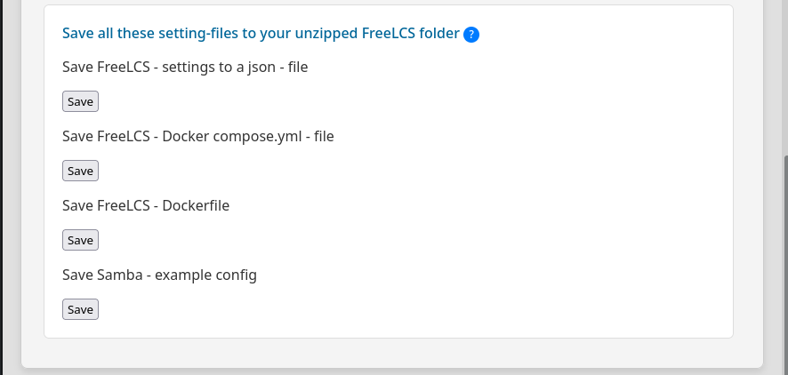
Keeping your setup secure requires:
- Backing up FreeLCS Docker images to guard against possible breaking changes coming in with Ubuntu Docker - image security updates
- Updating FreeLCS Docker images periodically to include latest Ubuntu security updates
- Updating your Docker host - machine with latest Ubuntu security updates
This section describes how set all this up.
Backing up FreeLCS Docker - images
Backing up FreeLCS Docker - images requires:
- Setting up a systemd service (unit) that runs the FreeLCS backup - script: backup_freelcs_docker_images.py
- Setting up a systemd timer that periodically runs the the FreeLCS backup service
The script backup_freelcs_docker_images.py lets you do the following:
- Define how many FreeLCS Docker - image backups you want to keep
- Backup the current FreeLCS Docker - images so that you can restore them later if needed
- Automatically delete old FreeLCS image backups and only keep the latest
- Automatically delete current FreeLCS Docker - images and rebuild them with the latest Ubuntu LTS security updates
- Optionally you can enable installing Ubuntu security updates on the Docker host - machine also
There are example systemd service (unit) and timer configuration files in the FreeLCS directory. The files are: backup_freelcs_docker_images-example.service and backup_freelcs_docker_images-example.timer. These need to be modified for your specific setup.
First create a directory for FreeLCS docker image backups like: /home/UserName/freelcs/docker_image_backups
Make a copy of the example systemd unitfile with a new name
- cp backup_freelcs_docker_images-example.service backup_freelcs_docker_images.service
Edit backup_freelcs_docker_images.service and change the following line point to the absolute path of where the script backup_freelcs_docker_images.py is located, for example:
Change line:
WorkingDirectory=/home/mika/FreeLCS-4.0
to point to the path where FreeLCS files are located, like:
WorkingDirectory=/home/john/FreeLCS-4.0
Change line:
ExecStart=/home/mika/FreeLCS-4.0/backup_freelcs_docker_images.py
to point to backup_freelcs_docker_images.py in the FreeLCS directory and define where to create backups and how many to keep:
ExecStart=/home/john/FreeLCS-4.0/backup_freelcs_docker_images.py -backups_to_keep 12 -backup_dir /home/john/docker_image_backups -freelcs_dockerfile_dir /home/john/FreeLCS-4.0
This will tell the script that FreeLCS docker config files are in: /home/john/FreeLCS-4.0 and tells the script to backup into directory: /home/john/docker_image_backups and keep the 12 latest backups and delete backups older than that. If you run this weekly it will keep the last 3 months of backups available.
Enable host machine security updates
Optionally you can uncomment the following lines and enable the script to also install security updates for you host - machine Ubuntu LTS:
- ExecStart=/usr/bin/apt-get -y update
- ExecStart=/usr/bin/apt-get -y upgrade
- ExecStart=/usr/sbin/reboot
The systemd timer - file defines when and how often the FreeLCS backup and update - service defined above will run.
First make a copy of the systemd timer - file with a new name: cp backup_freelcs_docker_images-example.timer backup_freelcs_docker_images.timer
Now edit backup_freelcs_docker_images.timer and change the line that defines when and how often the service will run. In the example below FreeLCS backup script will run every week early on monday morning at 05:00:00 AM.
Here are a couple of sites that explains systemd timer - functionality:
Now we will activate the FreeLCS backup and update script as a systemd service and install a timer to run in periodically:
sudo su
cp backup_freelcs_docker_images.service /etc/systemd/system/
cp backup_freelcs_docker_images.timer /etc/systemd/system/
systemctl daemon-reload
systemctl enable --now backup_freelcs_docker_images.timer
Note that the systemd unit- and timer - files needs to be named identically and only the last part of the names (.service and .timer) being different.
FreeLCS builds up 1 - 3 Docker images / containers depending upon choices you make in the config_editor.html
A image / container contains just the programs and libraries the apps running inside it needs. All containers use the kernel and network of the host machine and apps running inside containers are isolated from the hardware and software of the host machine.
Docker calls the instance of the app and its dependencies an container when it is running and its version that is stored on the disk is called an image.
- The first FreeLCS image / container is called LoudnessCorrection and it hosts the Samba server and the main program of FreeLCS. The main program is called LoudnessCorrection and it monitors the hotfolder for incoming files and processes them. LoudnessCorrection and the Samba - server must be in the same container because LoudnessCorrection needs to query Samba about what files are still in the middle of transfer so that LoudnessCorrection won't start processing them before they have arrived completely to the hotfolder. The Samba - service running inside this container binds to the host computer IP meaning you use the Docker host - machine IP when you mount FreeLCS hotfolder to another computer. LoudnessCorrection also communicates with two optional containers through the network. LoudnessCorrection sends json - files containing a timestamp to heartbeat_checker - container and another json containing all the information about files being processed to the progress_report - container.
- The optional heartbeat_checker - program runs in its own container and receives periodic timestamps from LoudnessCorrection. Heartbeat_checker sends the user email if these timestamps stops arriving so that the user knows something is wrong and may restart the services.
- The optional progress_report runs in its own container and receives every 5 seconds an json file from LoudnessCorrection listing all files that are being processed and waiting in the queue. Progress_report binds to the Docker host - computers IP and port 9000 serving this information there as a web - server. You open the progress_report web - page by writing the Docker host - computer IP and port 9000 to your web - browsers address bar for example: http://192.168.1.100:9000
- Docker creates an virtual network for FreeLCS containers to communicate through. This network is not visible outside the Docker host - computer.
- LoudnessCorrection, heartbeat_checker and progress_report share a common configuration file (LoudnessCorrection_Settings.json) where settings for all these programs are stored. When you set up settings with config_editor.html it also creates an random 64 character hex string that is used as a secret token when FreeLCS programs communicates with each other. Heartbeat_checker and progress_report refuse to process any received information if the message does not include this secret "key". Because the programs share the same settings file with this key they all know about it.
Programs running in the Docker environment get time from the host machine. FreeLCS Docker - configuration in compose.yml sets FreeLCS os images to get the timezone of the host - machine. Timezone affects times displayed on progress report and loudness history graphics and FreeLCS docker container log timestamps.
The underlined lines in the picture mean: show the Docker host - machine files /etc/timezone and /etc/localtime as read only files also inside the docker container at the same exact path.
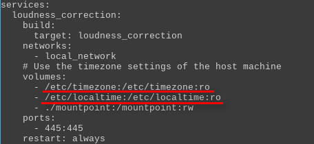
FreeLCS usage is very simple.
- First you mount FreeLCS HotFolder through the network.
- Then you drag some files to the HotFolder .
- A couple of minutes later you can drag loudness corrected files back
from "HotFolder / 00-Corrected_Files" to your computer
.
Mounting of the HotFolder is explained in it's own chapter.
- When you mount the HotFolder your operating system automatically opens
a window that shows the contents of the HotFolder. The examples below
are from Mac OS X, but the same principles apply to all operating
systems.
- The root of HotFolder is where you drag files you want to be loudness
corrected.
- Inside the root - folder the folder: "00-Corrected_Files"
is where corrected files and loudness calculation history graphics
appear.
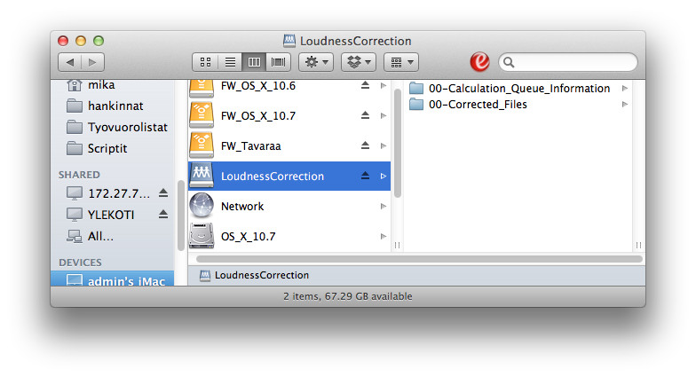
- To process a file drag it in the root of the HotFolder.
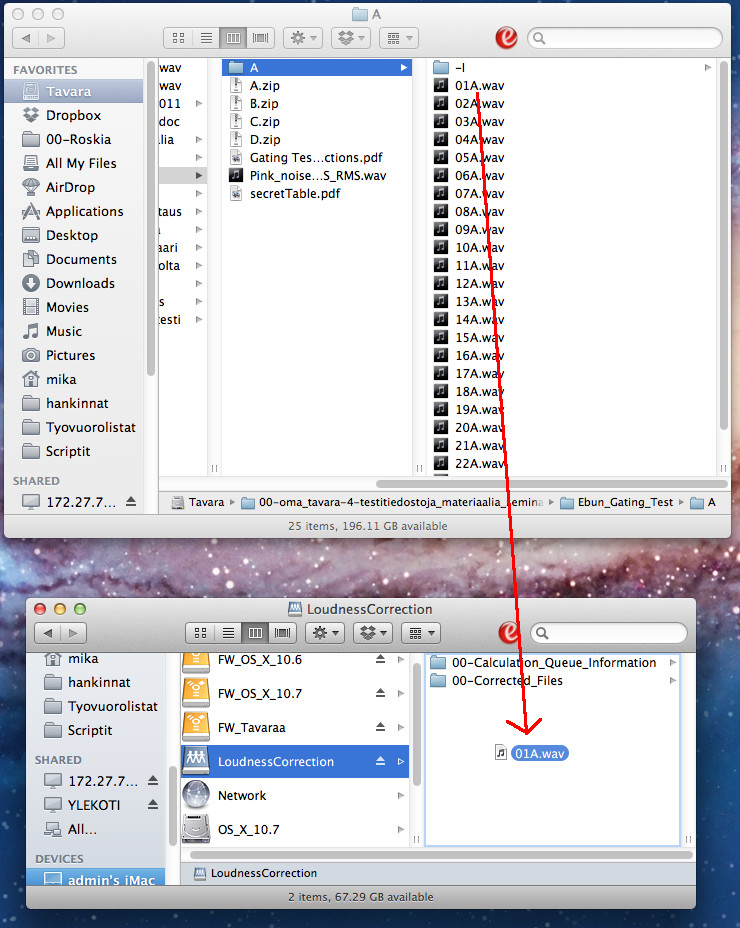
- The file will be copied over the network to the FreeLCS - server.
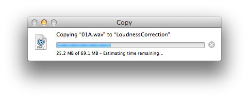
- When the file is copied over navigate to "00-Corrected_Files".
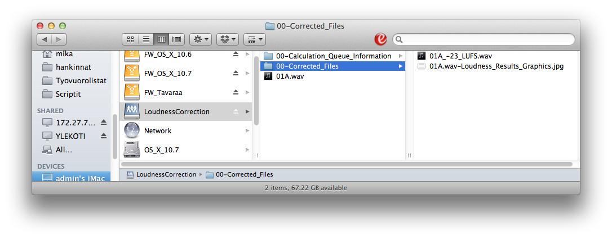
- In a while files start to appear there. The first file will be the
loudness calculation history graphics file and some time after that the
loudness corrected sound file appears. Drag the corrected sound files
back to your computer. Each corrected file will have the string "_-23_LUFS"
added at the end of its name.
- All files in the root of the "HotFolder" and "00-Corrected_Files"
will be automatically deleted after a time period that you defined in
the installer program. By default it is 8 hours.
- Source file loudness variations and loudness calculation results are
shown on the loudness history graphics file.
- Short term loudness variations over time are shown on the picture as a
brown line.
- The bright green line represents the target loudness when it is set to
EBU R128 standard -23 LUFS. Color of this line is blue if target
loudness is set to a value lower that -23 LUFS and red if it is set
higher than -23 LUFS.
- The dark green horizontal line shows the integrated loudness of the
source file. Integrated loudness averages loudness across the length of
your whole file into a single number.
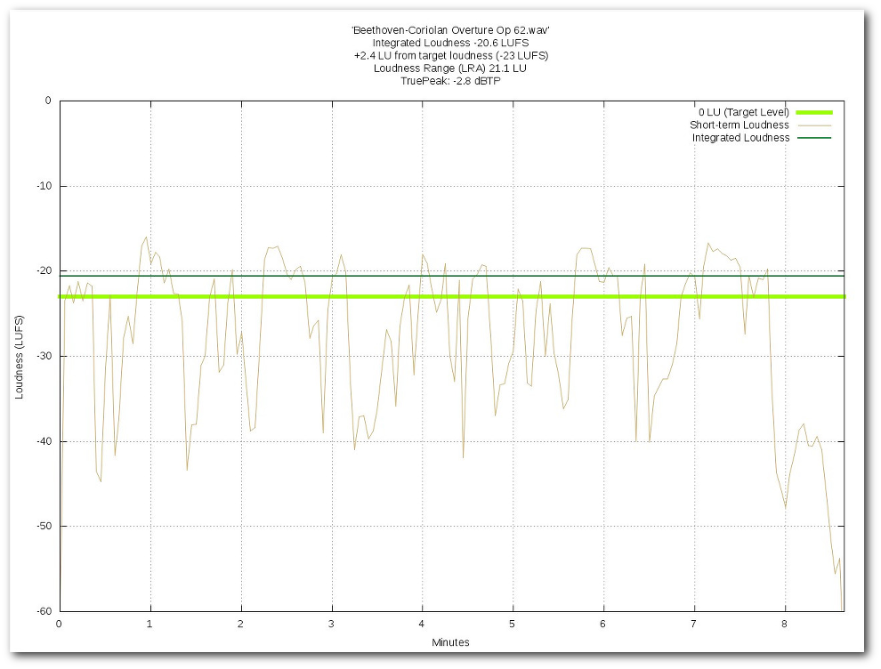
Loudness
history graphics when target loudness is set to -16, -23 and -31 LUFS
(from top to bottom)
The color for the line for target loudness is:
- red when target loudness is higher than -23 LUFS
- light green when target loudness is EBU R128 standard -23 LUFS (0 LU)
- blue when target loudness is lower than -23 LUFS
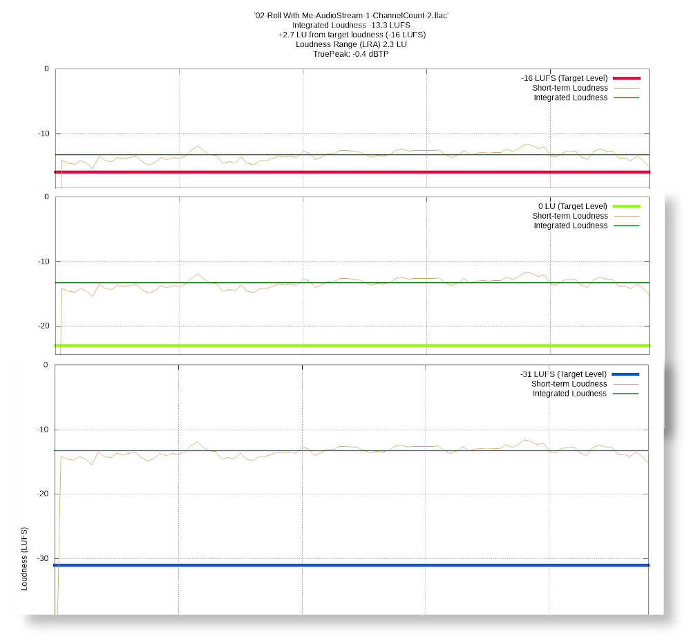
- Note !!!!!!! There are connection problems on OS X 10.7 - 10.10 due to
Apple's broken smb - implementation. Read
more about it here.
- First click an empty spot on your desktop, this activates the Finder -
program.
- The keyboard shortcut to bring up the "Connect to Server" - window is
cmd + k, so keep the cmd pressed and press k.
- Now you need to have your servers ip-address. Write "smb://your
servers ip address" in the prompt and press "Connect".
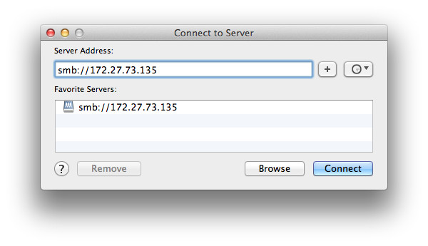
- The next window lets you choose between logging in anonymously or as a
registered user.
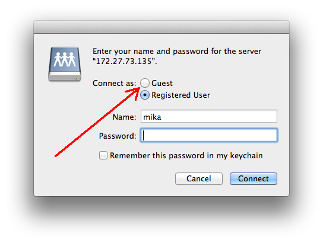
- Now the window changes and looks like the one below. Click "Connect".
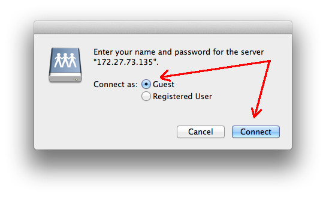
- The FreeLCS network share is mounted and Finder opens a window showing
contents of the HotFolder. Now you can start using the server :)
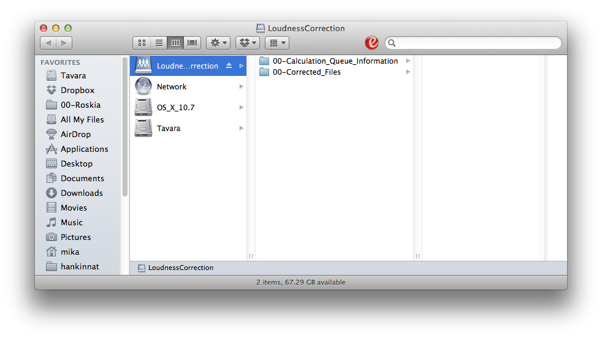
When you have mounted the HotFolder you can make an alias for it that
stays on your desktop. You can then skip all the steps above and mount the
HotFolder just by double clicking on the alias.
- First you must have mounted the HotFolder.
- Open a Finder - window and scroll to the bottom of the device list on
the left panel. You should see an entry there that has the name of your
computer, by default it is "admin's Mac". Click on it.
- Now you should see all mounted devices in the Finder window and "LoudnessCorrection"
should be among them. Start dragging "LoudnessCorrection" out of the
finder window to the desktop and before you let go of the mouse button
press and hold cmd and alt -
buttons. You should see a curved arrow on top of the LoudnessCorrection
- icon. Keep pressing cmd and alt and let go of the mouse button.
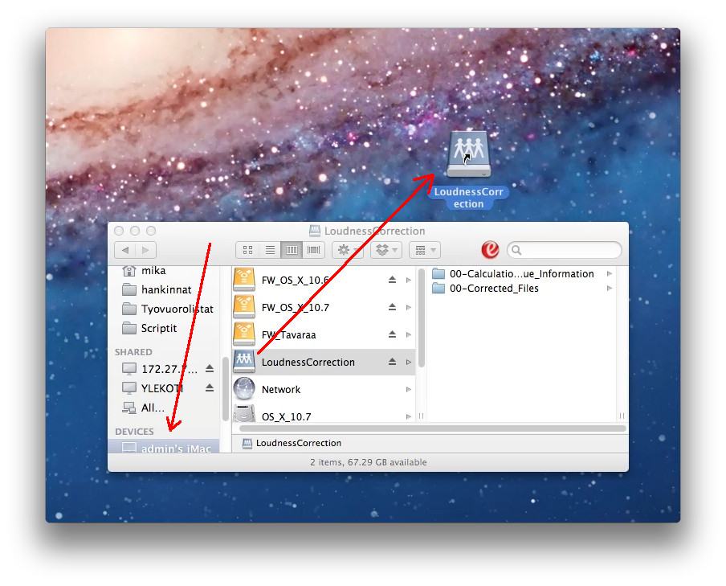
- Now on your desktop there should be a "LoudnessCorrection" - icon with
a curved arrow on top of it. An icon like this is called an alias.
- From now on you can mount the LoudnessCorrection HotFolder just by
double clicking on the alias.
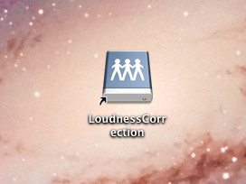
Note that samba passwordless share does not not work anymore by default for windows 10 and windows 11 24H2.
These operating system versions require smb - mounts with username and
password authentication. See more details for a workaround and alternative
Samba configuration in this section of the manual: Username
and Password authentication for windows 10 and 11
- Open windows file explorer and right - click on "This PC"
Select "Map Network Drive" from the menu.
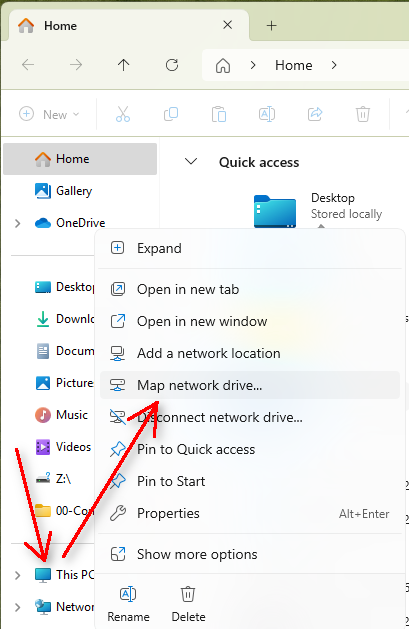
- Write the address of the server in the window. If your
installation has a target loudness different from standard -23 LUFS then
the target loudness is part of the mount path. For example if your
FreeLCS installation has a target loudness of -16 LUFS, then the mount
path is something like: \\192.168.100.109\LoudnessCorrection_-16_LUFS.
Make sure that the option "Reconnect at sign-in" is
tagged, without it windows won't make the mount when windows starts up.
Tag the option "Connect using different credentials".
Click "Finnish".
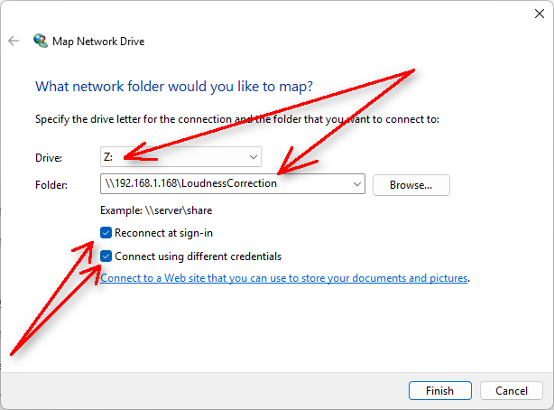
- Fill in the username and password and optionally tag "Remember my credentials" if you want windows not to ask for username and password for the next time.
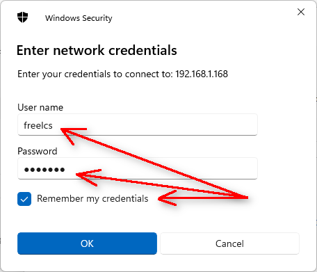
In Linux use command (as the root - user): mount -t cifs -o username=freelcs,password=freelcs //192.168.1.168/LoudnessCorrection/
/mnt/ (Adjust the IP -
address and the last foldername to match your system)
If you selected "Write html progress report" = "yes"
in the installer then you can navigate to the IP and port 9000 of your Docker - machine (for example 192.168.1.100:9000) with your browser and see the loudness calculation queue. The progress report is updated every 5
seconds and it shows how many files are waiting for a processing slot to
open, what files are currently processed and the names of last files
that were processed and the time processing was finished.
The upper part of the window shows the names of next 10 first files that are
coming in for processing and above that the total number of files waiting in
queue is shown.
The middle part shows the names of files that are currently being
processed. The number of files that are simultaneously processed depends on
what you selected as the "Number Of Processor Cores To Use"
in the installer. Each file is simultaneously processed by two processor
cores so if you selected six cores to be used, then three files are
processed at the same time (in the example picture below 14 cores are
assigned, so seven files can be processed simultaneously).
The bottom of the page shows the last files that were processed.
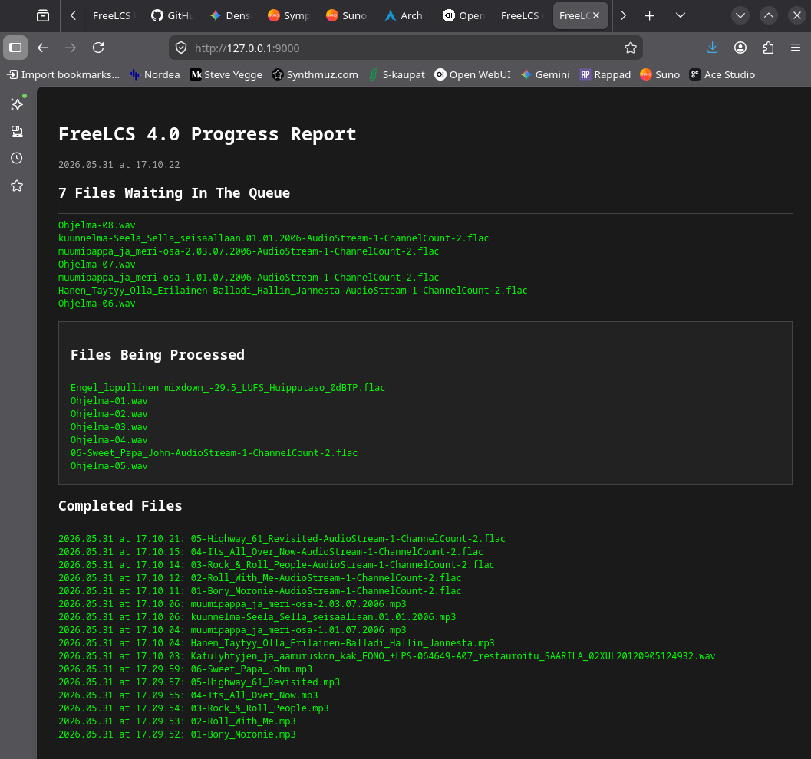
If you have found an error in FreeLCS software or documentation please
report it so that it can be corrected.
If you find that FreeLCS software crashes or behaves in ways it should not,
try first to find out if the problem is caused by a file in the HotFolder.
If a certain file or file format causes the problem please make a copy of
the file / files for later use. The files might be needed to confirm that
the bugfix really solves the problem.
When you file a bugreport keep in mind that the developer needs to be able
to reproduce the bug in his own system in order to fix it. So when reporting
a bug report the following:
- The Docker Ubuntu - image version that you use.
- The version of the FreeLCS - package that you use.
- The steps that needs to be done in order to make the bug appear.
- If a file causes the bug and you want to send the file to the
developer, then store the file in a cloud file storage system for
example DropBox's Public - folder and add the download link to the bug
report.
Report bugs here (requires creating an free account): https://sourceforge.net/p/freelcs/tickets/
When you have logged in navigate to the link above and click the "Create
Ticket" - button on the left. When you create a ticket, the
developer gets the bugreport in email.
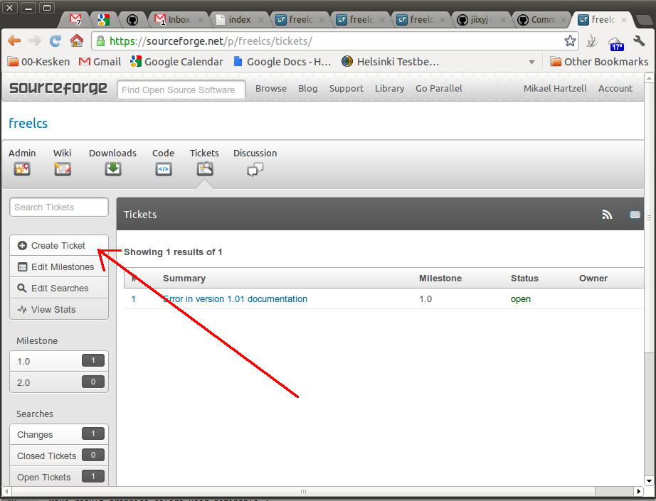
FreeLCS development happens on Github ( https://github.com/mhartzel/freelcs).
All new versions of software are uploaded there before official release.
Unreleased versions are untested so it is recommended that normal users do
not use these versions on their production servers. The reason for this is
that when new program code is added and old is modified it is possible that
new bugs creep in.
If however you have encountered a bug you can navigate to that webpage and
check the changelog there (Documentation/Changelog.txt) to see if the bug
has already been fixed. If you want to test the latest software versions you
can download all files in the git-repository like this:
- Open the Terminal and get root - permissions (asks for root password):
sudo su
- Install git - software: apt-get -y install git
- Navigate to the directory where you want to Download the latest
FreeLCS files.
- Download the git-repository with the command: git clone
http://github.com/mhartzel/freelcs.git
- This will create a new directory 'freelcs' and put all files inside
it.